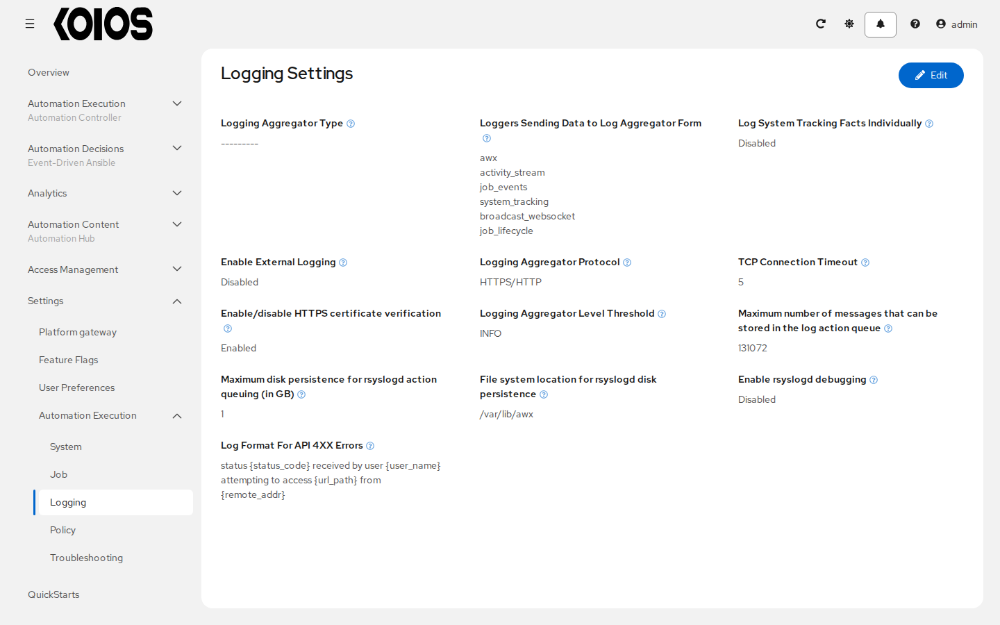
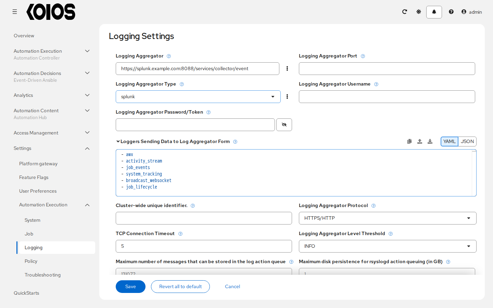

12. Logging and Aggregation
Automation controller can forward structured JSON records to an external log collector. This includes controller activity, job events, cached facts and service messages. It does not configure the platform gateway, hub, event-driven automation service or Kubernetes node logging.
The controller runs an rsyslog sidecar in both its web and task pods. The container is named <platform>-controller-rsyslog in the <platform>-controller-web and <platform>-controller-task Deployments. Configure it through controller settings; do not change rsyslog on the cluster nodes or edit generated files in a pod.
12.1. Configure external logging
As a platform administrator, open Settings > Automation Execution > Logging and click Edit.
Select Enable External Logging.
Set Logging Aggregator, Logging Aggregator Type and Logging Aggregator Protocol for your receiver.

The supported types are logstash, splunk, loggly, sumologic and other. They control message formatting and authentication behavior, not deployment of a collector. Provision and configure the receiver separately.
For HTTPS/HTTP, use the full receiver URL, including its path and port when needed. HTTPS is assumed unless you explicitly specify http://. The port in the URL takes precedence over Logging Aggregator Port. For TCP or UDP, use a hostname or IP address and a separate port. RELP is not a supported protocol in the current settings API.
Set Logging Aggregator Username and Logging Aggregator Password/Token if required by the receiver. Keep Enable/disable HTTPS certificate verification selected for HTTPS and configure a trusted CA when the receiver uses a private CA.
Choose Loggers Sending Data to Log Aggregator Form, Logging Aggregator Level Threshold and TCP Connection Timeout as appropriate. Use field help to check the units and protocol-specific behavior.
Click Save. The form returns to the settings details page. Cancel discards edits.

The current UI does not provide the old Test action. To request a test through the controller API, send an authenticated POST to /api/controller/v2/settings/logging/test/ after saving and enabling logging. The test uses the saved settings and emits an AWX Connection Test Message record. An accepted response does not prove that the external service stored the record; verify receipt at the collector.
The corresponding settings endpoint is /api/controller/v2/settings/logging/. Settings supplied through spec.controller.extra_settings in the KoiosPlatform are deployment-managed and cannot be overridden through the UI; see Deployment-managed settings.
12.2. Log sources
The default logger selection includes:
awx: controller service messages.activity_stream: changes to controller resources. Gateway access-management changes belong to the gateway’s own activity records.job_events: Ansible callback events saved for jobs.system_tracking: host facts recorded through the fact cache.broadcast_websocket: WebSocket broadcast diagnostics.job_lifecycle: job processing and state transitions.
Logging Aggregator Level Threshold controls the severity of ordinary service messages. The structured analytics loggers have their own event levels; they do not use that threshold in the same way.
12.3. Message schema
Common fields include @timestamp, message, host, level, logger_name, cluster_host_id and tower_uuid. The API identifiers retain their upstream names. Exception records can also contain stack_trace and process or source-location details.
Activity stream records include the actor, operation, changed fields and affected objects. Job event records include event fields and event_data, whose shape depends on the Ansible callback event. Do not assume every event contains the same result fields.
System tracking records contain ansible_facts, ansible_facts_modified, inventory_id, host_name and job_id. The facts depend on what the playbook collected. This does not require the retired fact-scan playbooks or guarantee separate services, packages and files records.
Job lifecycle records include lifecycle_data and organization_id when available. Splunk wraps the record in an event object and supplies a top-level time value for its HTTP Event Collector.
12.4. Collector examples
12.4.1. Logstash and Elastic Stack
Configure a receiver that accepts the chosen transport and JSON records. For an HTTP receiver, set Logging Aggregator to its complete URL and choose logstash as Logging Aggregator Type. Configure authentication to match the receiver. Koios Automation Platform does not include the old Docker Compose development environment for deploying Logstash.
At the receiver, parse the incoming JSON according to the input plugin you use. A Logstash input with a JSON codec can decode the record directly; use a JSON filter only if an earlier input has placed the JSON text inside a message field.
12.4.2. Splunk
Choose splunk and HTTPS/HTTP. Set Logging Aggregator to the complete HTTP Event Collector event endpoint, for example https://splunk.example.com:8088/services/collector/event. Enter the collector token in Logging Aggregator Password/Token; the sender adds the Splunk authorization header. Do not enter $encrypted$ as a new token: it is the API’s masked representation of a saved secret.

12.4.3. Loggly
Choose loggly and HTTPS/HTTP, then use the HTTPS input URL issued by the service, including its token and path. Treat that URL as a credential and redact it in screenshots and diagnostic reports.
12.4.4. Sumo Logic
Choose sumologic and HTTPS/HTTP. Use the HTTP source URL supplied by the collector service. That URL can contain credentials; do not copy it into documentation or logs. Verify the received JSON records in the collector after saving the configuration.
12.5. Queueing during collector outages
The logging settings include:
LOG_AGGREGATOR_ACTION_QUEUE_SIZE: in-memory action queue limit.LOG_AGGREGATOR_ACTION_MAX_DISK_USAGE_GB: disk-backed action queue limit in gigabytes; the default is 1.LOG_AGGREGATOR_MAX_DISK_USAGE_PATH: queue spool directory; the default is/var/lib/awxinside the rsyslog container.
The queue can buffer records while a receiver is unavailable, subject to its limits. The default spool path is not a persistent log archive and does not guarantee delivery across container replacement. Size and monitor storage separately if outage buffering is required; use an external collector for durable retention.
12.6. Controller API 4XX error format
Log Format For API 4XX Errors (API_400_ERROR_LOG_FORMAT) configures controller API error log messages. The default is:
status {status_code} received by user {user_name} attempting to access {url_path} from {remote_addr}
Available substitutions are status_code, user_name, url_path, remote_addr and error. Edit the field in Settings > Automation Execution > Logging, then click Save. It does not change error formatting for requests handled by the platform gateway.
12.7. Troubleshoot delivery
Check that external logging is enabled, the receiver address and protocol agree, the selected logger produces records, and the pod can reach the receiver. For HTTPS, check the certificate chain and hostname. Confirm records at the collector rather than treating an API test response as a delivery receipt.
Inspect the relevant rsyslog container’s logs through Kubernetes, for example:
kubectl --context <context> -n <namespace> logs deploy/<platform>-controller-task -c <platform>-controller-rsyslog --tail=100
kubectl --context <context> -n <namespace> logs deploy/<platform>-controller-web -c <platform>-controller-rsyslog --tail=100
Use the intended isolated kubeconfig and context; oc can be used instead of kubectl on OpenShift. Review and redact diagnostic output before sharing it, since messages and receiver URLs can contain sensitive data.